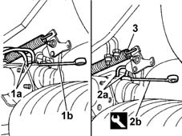
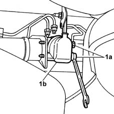

3330C60 LOAD PROPORTIONING VALVE (one), left or right - R.R. - Includes adjustment.
- Path
- Procedures > 33 BRAKING SYSTEM > 3330 HYDRAULIC BRAKING SYSTEM > 3330C brake pump, reservoir and load proportioning valve > 3330C60 LOAD PROPORTIONING VALVE (one), left or right - R.R. - Includes adjustment.
- Kind
- repair procedure (removal / refitting; the operation number is the code)
- Applies to
- all engines; all production periods
- Interactive page
- https://sloeber94.github.io/elrnDB-fMltpl/en/#/2891626
Applies to: all engines; all production periods
 Removing
Removing
 Refitting
RefittingPlace the car on the ramp.
Disconnect the battery negative terminal.
 | Name | Connector |
|---|---|---|
- | Battery |
1. Disconnect the connectors (1a) using a 13 mm spanner (1b).
2. Disconnect the connectors (2a) using the spanner (2b).
 | Name | Country |
|---|---|---|
2b | Box wrench for brake fittings | 1.856.132.000 |
3. Disconnect the load proportioning valve spring.

Applies to: all engines; all production periods
1. Undo the fixing bolts (1a) and remove the load proportioning valve (1b).

Applies to: all engines; all production periods
Refitting
RemovingProceed as follows.
Place the load proportioning valve in its original position, then tighten the fixing bolts to torque.
 | Fastening | Component | Ø | Value (daNm) |
|---|---|---|---|---|
- | Bolt | LOAD PROPORTIONING VALVE | M6 | 0.8 |
Attach the eyelet for the traction spring to the opening in the bracket on the rear axle.
Connect the pipe connectors and tighten them to torque using the tool.
| Name | Country |
|---|---|---|
- | Box wrench for brake fittings | 1.856.132.000 |
| Fastening | Component | Ø | Value (daNm) |
|---|---|---|---|---|
- | Connector | LOAD PROPORTIONING VALVE | M10 x 1 | 1.6 |
Connect the pipe connectors and tighten them to torque using the 13 mm spanner.
| Fastening | Component | Ø | Value (daNm) |
|---|---|---|---|---|
- | Connector | LOAD PROPORTIONING VALVE | M12 x 1 | 1.6 |
- 0010T64 brake and or clutch fluid check level and top up as necessary .
- 0010T65 hydraulic brake system bleed air .
3330C62 load proportioning valve control - check and adjust .
Connect the battery negative terminal.
| Name | Connector |
|---|---|---|
- | Battery |
Remove the car from the ramps.